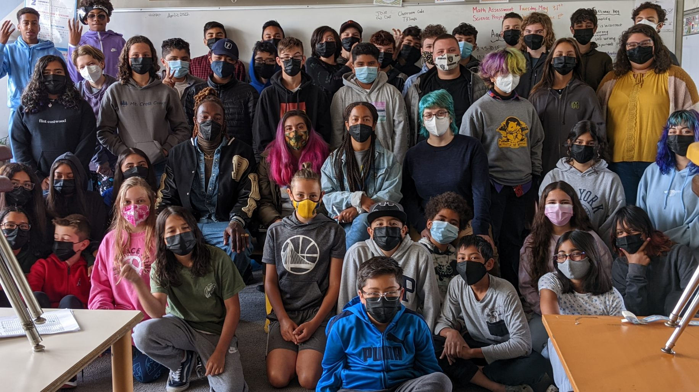

You are amazing friends to me.
Even though we don't see each other every day I still think about you all the time and care for you very much
I will miss coming to work every day and seeing your grumpy faces in the morning
It is hard to choose when my favorite part of the school year was. There were so many great moments. Cooking together, traveling together, learning together. It is hard to say which year was my favorite because all of them were so special to me and so essential to my growth as a teacher.
thank you for all of the laughs.